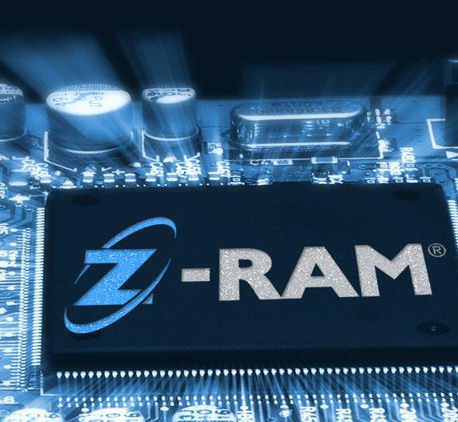

Z-RAM

Компания Innovative Silicon, Inc (ISi) заявила о двух существенных прорывах в своей технологии памяти Z-RAM (zero-capacitor RAM). Напомним, Z-RAM отличается от традиционной памяти отсутствием конденсаторов для хранения информации. Запись и хранение данных в этой технологии основаны на так называемом эффекте “плавающего тела” (FB, floating body).
Инженерам ISi удалось снизить напряжение питания Z-RAM до уровня ниже 1 В. Это самое низкое значение среди других технологий памяти с “плавающим телом”. Новое достижение позволило впервые сравнять по этому показателю FB-память с традиционной DRAM-памятью. Второй прорыв состоит в реализации Z-RAM на основе объемного кремния с использованием структур трехмерных (неплоских) транзисторов, широко применяемых производителями DRAM-памяти. Это позволяет отказаться от использования субстратов SOI (кремний на изоляторе), которые являются более дорогими. Обновленная технология Z-RAM была реализована в тестовой микросхеме компанией Hynix Semiconductor. Как отмечает ISi, этот чип наглядно продемонстрировал, что Z-RAM имеет все шансы заменить традиционную память и обладает более низкой себестоимостью по сравнению с любой DRAM-технологией при использовании техпроцесса с проектными нормами 40 нм и ниже. Z-RAM сравнима с DRAM по энергопотреблению и быстродействию.
Как отметил президент и CEO Innovative Silicon Марк-Эрик Джонс (Mark-Eric Jones), DRAM была основной технологией памяти на протяжении сорока лет, но ей пришло время уступить место передовой “безконденсаторной” Z-RAM. Представитель Hynix Semiconductor считает, что ISi удалось устранить недостатки и преодолеть ключевые барьеры, стоящие на пути всех технологий памяти с “плавающим телом”.
После закрытия Innovative Silicon в 2010 году патент данной технологии перешел к Micron Technology, которая до сих пор ведет разработку.